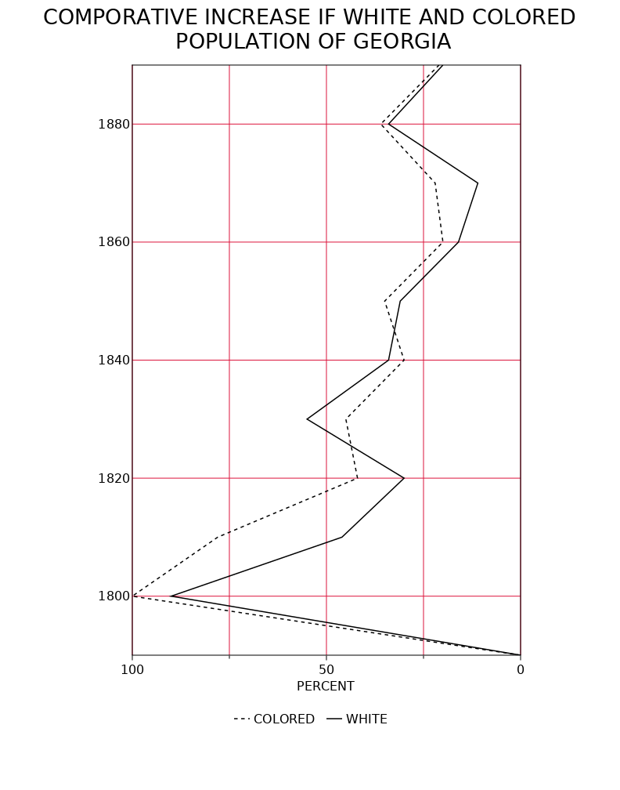
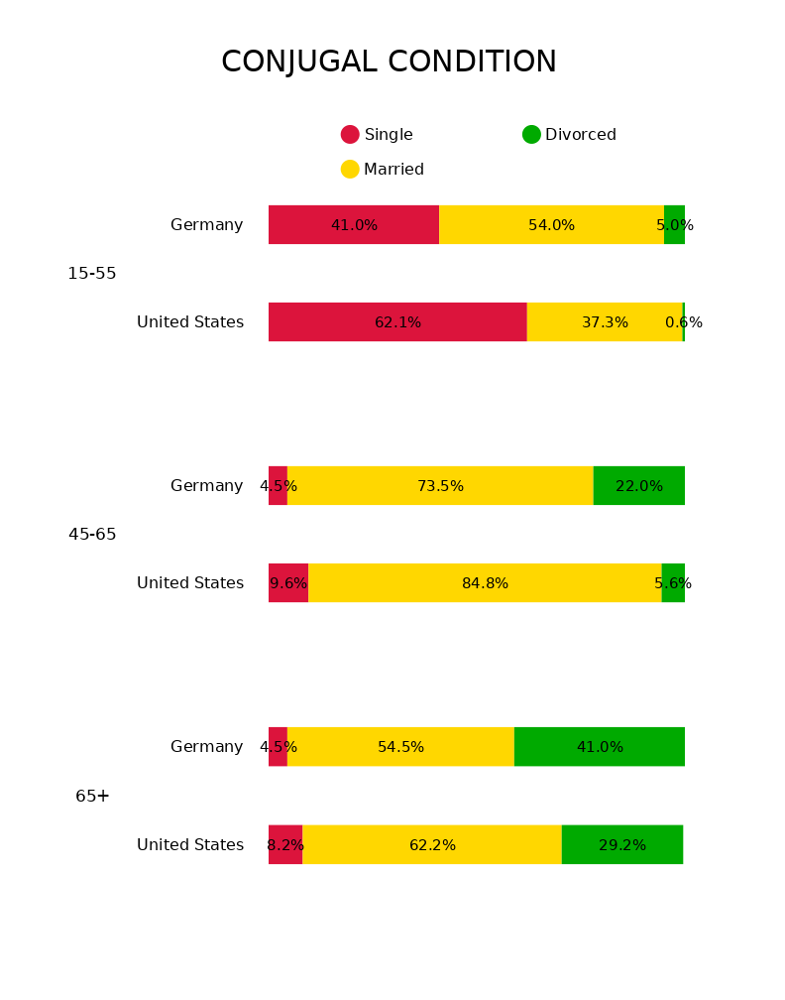
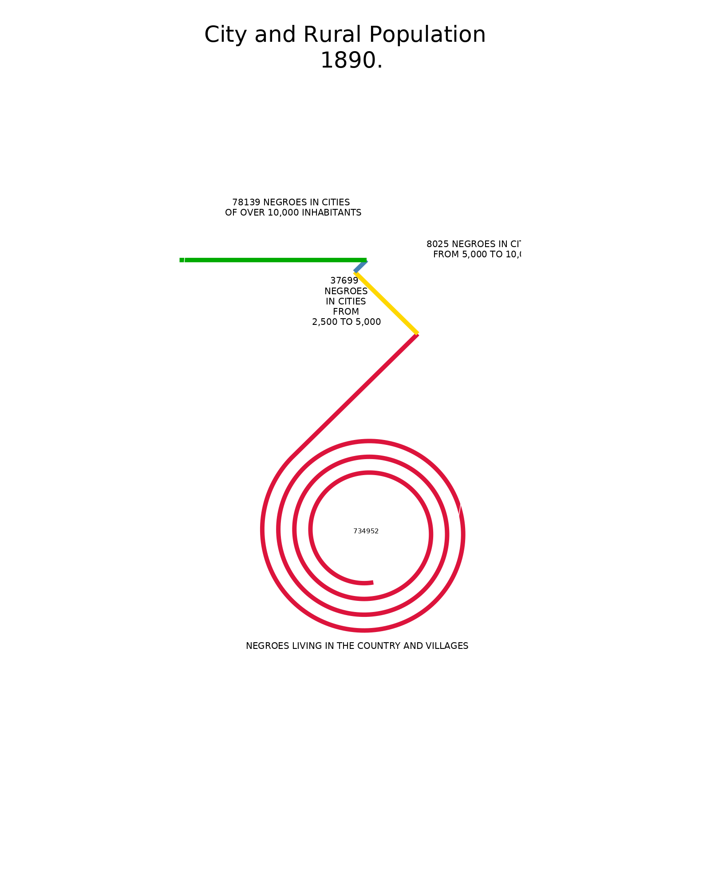
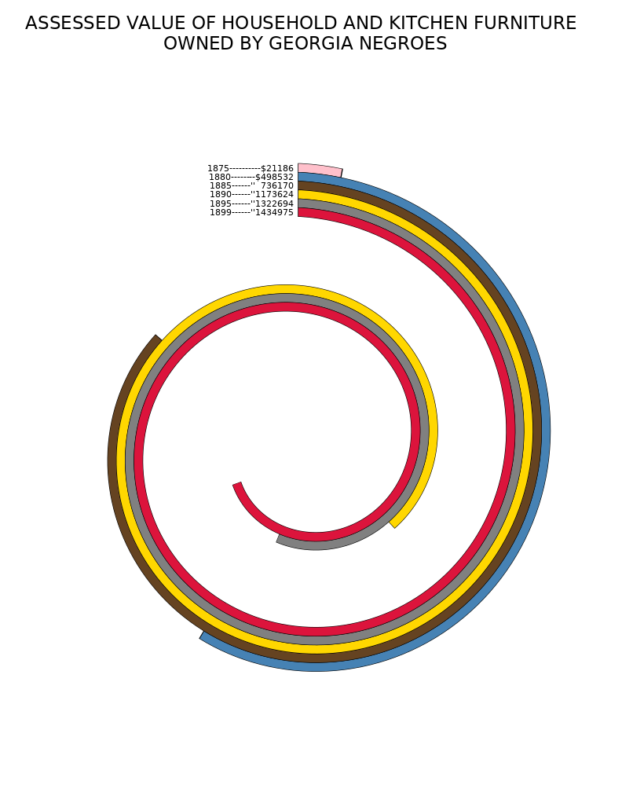
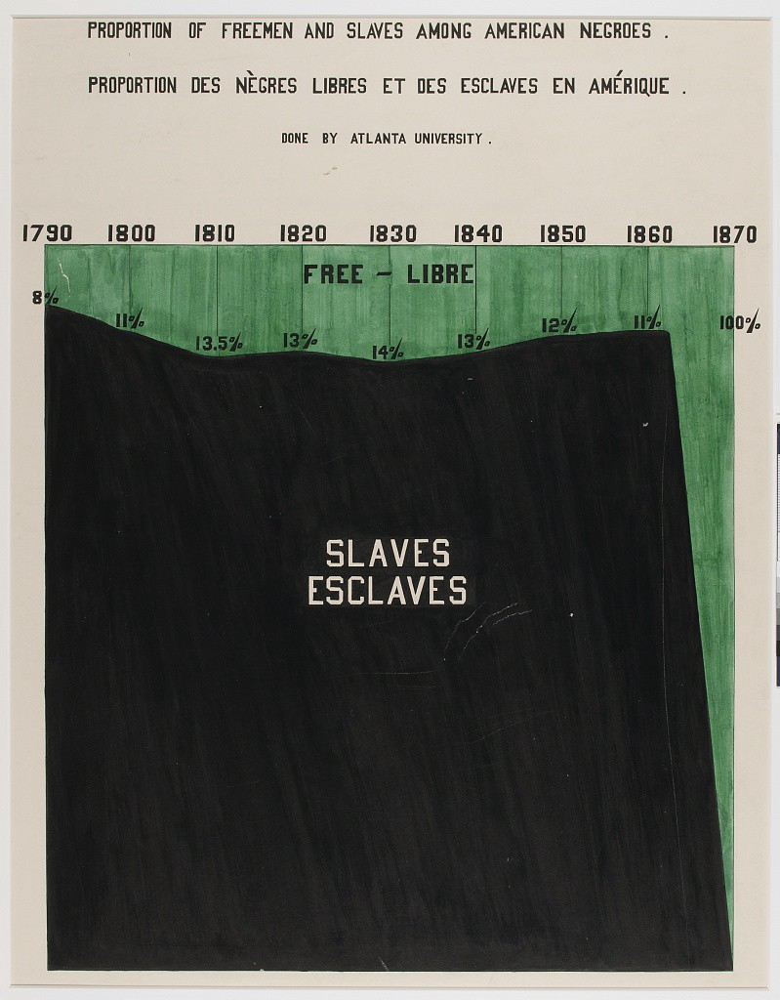
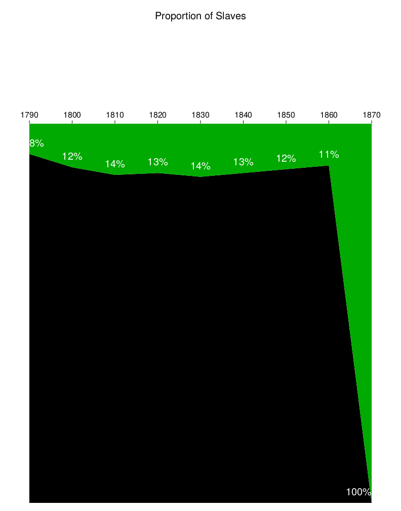

To show how to use the package in more detail we show how to use the recipes to replicate the original plates by DuBois.
using DuBoisPlots
p = Plate7(DuBoisData.Plate7, :Year;
title="Comporative Increase if White and Colored \n Population of Georgia",
xlabel = "Percent")
| Original | Replication |
|---|
 |  |
p =Plate10(DuBoisData.Plate10,:Age,:Population, 3:5,
["15-55", "45-65", "65+"],
["Germany", "United States"],
["Single", "Divorced", "Married"],"Conjugal Condition")
| Original | Replication |
|---|
 |  |
p = Plate11(DuBoisData.Plate11,:Population,
[-0.0,0.12], [0.09,0.1], [0.025,0.075], [0.03,-0.09], [0.035,-0.035],
"no", "City and Rural Population \n 1890.",
" negroes in cities \n of over 10,000 inhabitants",
" negroes in cities \n from 5,000 to 10,000",
" \n negroes \n in cities \n from \n 2,500 to 5,000",
" Negroes living in the country and villages")
┌ Warning: If you need to see axes to place labels, set value to 'yes'.
└ @ DuBoisPlots ~/work/DuBoisPlots.jl/DuBoisPlots.jl/src/Recipes/Plate11.jl:38
| Original | Replication |
|---|
 |  |
p = Plate25(DuBoisData.Plate25,:Year,:Value,
"Assessed value of household and kitchen furniture \n owned by Georgia negroes")
| Original | Replication |
|---|
 |  |
p = Plate51(DuBoisData.Plate51, :Year;
title="Proportion of Freemen and Salves Among American Negroes.",
small_title="Proportion des Negres Libres et des Esclaves en Amerique",
subtitle="Reproduced by DuBoisPlots.jl")
| Original | Replication |
|---|
|  |  |
p = Plate53(DuBoisData.Plate53,:Ages,:Gender,
[:Single, :Married, :Widowed],[45 1.2; 55 4.7; 95 8.5], [25 2; 45 5.5; 50 8.5],
title_1 = "Conjugal condition of American Negroes according to age periods.",
title_2 = "Condition conjugale des Negres Americains au point de vue de l' age.",
subtitle = "Done by Atlanta University.", bot_lab = "PER CENTS.")
| Original | Replication |
|---|
 |  |